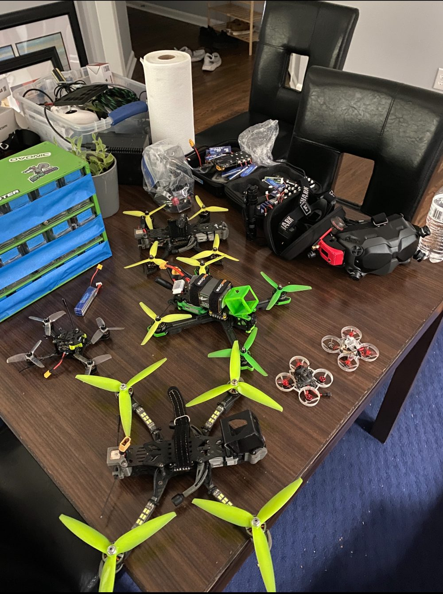
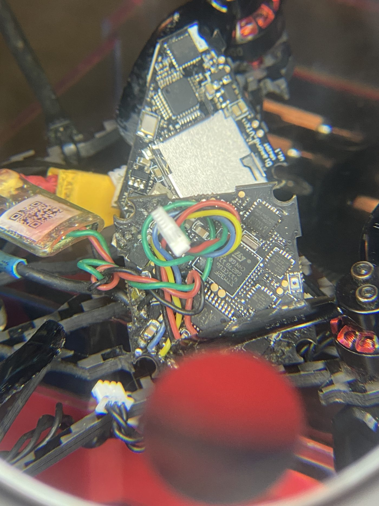

I work the part of a sale where the product meets the customer's actual site, system, or workflow. I go look at how things really run, figure out what will work, explain it plainly to the people paying for it, and build my own tools when the job needs one.
Notes and work, oldest first
The drone that taught me how to use an LLM
~2023 · FPV drones, Betaflight, PID tuning
The drones came from a trade. I'd set up a scraper (with an LLM's help) to watch Facebook Marketplace for underpriced stuff and odd trade offers, and it flagged a guy selling a whole FPV setup. It was listed around $3,500, or he'd trade it for a specific kind of ocean kayak. I found a similar kayak for $800, put it on the car and drove it out to him. That's how I ended up with a table full of drones and no idea how to tune them.

The haul from the kayak trade.
Flying them was the easy part. Every quad runs a PID control loop, and the P, I and D values decide how it reacts to your sticks and to the air: how hard it corrects, how it settles, whether it wobbles coming out of a dive. I could feel what was wrong. I couldn't have told you which number caused it.
So I tried something that felt a little like cheating at the time. I pulled the PID values and the relevant parts of the config off the flight controller, pasted them into ChatGPT, and described how it flew. I described it the only way I could, in pilot terms: floaty in the turns, a little bounce when the sticks snap back to center after punching forward, I want it to feel locked in. It came back with what each value was doing, what to change, and why.
That was the light bulb. When I hit a gap in what I know, it usually means one of two things: drop it, or spend a few weekends in forum threads until I understand enough to start tweaking. This skipped the line. I got a working model of the system first, then learned the details by changing things and flying.
What took me longer to appreciate is that the whole thing depended on my side of the conversation. The model could do PID math all day. It couldn't fly the drone. The useful input was me knowing the outcome I wanted and describing a feel precisely enough to turn into numbers. That's a skill of its own, and it's how I've used these tools ever since: know what the end state looks like, know roughly what's possible, and use the model to close the distance.

Soldering a flight controller under the magnifier.
Brain RAM, or why Salesforce is a quarter-trillion-dollar company
From my time on the phones at Vacasa, 2022–2024 · CRMs
There's an idea in Getting Things Done I think about constantly. Your short-term memory works like computer RAM. It holds every open loop and every decision you haven't made yet, and it has a limit. Your conscious mind is the display. It's for focusing, not for storage. Fill the RAM and you stall out. My favorite line from it: "There is no reason to ever have the same thought twice, unless you like having that thought."
A sales team has the same problem, multiplied. Every rep is carrying a few hundred open loops: who's waiting on a quote, who said to try them after the holidays, who already got the pricing email. If that lives in people's heads, it gets re-thought over and over, and some of it just falls out.
That's what a CRM is for. People call it Slack for sales, and it's sort of that, but mostly it's the company's external memory. Salesforce is huge because it's where a company keeps track of what it told whom, and what it promised.
At Vacasa I was on about 25 homeowner calls a day, in Salesforce, with SalesLoft and Twilio on the phone side, and I built my own reports and lead lists in it. Clean notes meant a callback picked up where the last call left off. Messy ones meant starting over with someone who expected me to remember them.
So I'm a bit of a hygiene nerd about it. If it isn't in the CRM, it didn't happen. A messy CRM puts the RAM problem right back: everyone re-asks, re-checks and second-guesses. A clean one gets the right information to the right person at the right time, which is most of what a sales or support org needs from its software.
Selling something complicated to people who just want it to work
First sales hire, seed-stage IoT snowmelt controls · 2025–2026
We sold networked controls for the heat tape that keeps snow and ice off big buildings. The buyers were HOA boards, property managers and lodge owners: smart, busy, outcome-oriented people. They wanted the roof handled and the power bill down. They did not want to learn how the network worked.
I worked both ends. I'd survey a site (electrical panels, power draw, where the network could reach), work out the install, and build a cost model with the utility rebates in it so a board could vote on it. Then I'd present it to a room full of people who would never think about it again once it worked.
Here's what I took from it. When you bring a complex technical product to non-technical buyers, you get to keep a little of the magic. They should be able to understand it if they want to, and when the one engineer on the board asks about connectivity or failsafes, you need the real answer ready. But the product should be good enough that "isn't this cool?" is a fair answer to "how does it work?" If a buyer needs the whole architecture explained before they feel safe, either the product or the pitch isn't done yet.
A lot of what I saw on site changed the pitch, and some of it changed the product. I wrote it up as the sales playbook and trained the reps who came after me on it.
If you can train a rep, you can train an engine
Same startup · 2025–2026 · prospecting from public data
There was no lead list when I started. The usual fix is to buy one, or hand a new rep a territory and tell them to go find good buildings. Either way, somebody has to describe what a good customer looks like.
I wrote that description for a machine instead. I started from the buildings I'd already surveyed and asked what made the good ones good: a long roofline (more heat tape, bigger job), close to a resort, high enough to get real snow, and property values that meant an HOA with a budget. That's what I'd tell a new rep on day one, written down as weights.
Then I pointed it at public data, eight sources in all, including county parcels, building footprints, elevation, snowfall, census data and the state HOA registry. Every property got a score. Research agents found the decision-makers at the top of the list, and call sheets came out the other end. When a site survey disagreed with a score, I adjusted the weights.
It didn't replace reps. A new rep started day one with a ranked list and the reasoning behind it, which is most of what I'd otherwise spend their first month teaching.
Aerie: small businesses meet software that books things
Aerie is a pre-arrival app for vacation-rental guests in Park City. Before they land, a guest can book the airport transfer, a grocery stock-up and ski rentals. I built it myself with Claude Code (Next.js, Postgres, Stripe), set up net-rate accounts with two local vendors, and pitched property managers on putting it into the messages they already send guests.
What interests me is the plumbing between the old way and the new one. Most of the businesses a guest actually spends money with here run on a phone, a voicemail box and a whiteboard. That works when the customer is a person calling. It works worse when the customer is a booking flow, and worse again when it's an agent booking for someone with no human in the loop. A web presence was the first step and online booking was the second. Plenty of small businesses never really took the second, and the third is already showing up.
The other half is simpler. Guests are already going to spend this money. Every family that lands here needs groceries and skis. Getting ahead of spending that's going to happen anyway, and making it easier, beats trying to create demand from nothing.
Write the constitution yourself
February 2026 · starting an AI system
Before I let an AI system work on something for longer than one conversation, I write down what it's for. The first time I did this properly was for a sales assistant: purpose, values, what it wasn't, and who decides what. My hand-written first draft had this in it:
It is not permission. Parker has authority. The system helps him use it.
The rule I care about most ended up in a section on division of authority: the system drafts, I approve and send.
The temptation is to have the model write that document for you. It's very good at it, and it'll hand you something tidy and complete-looking in thirty seconds. But writing it is where you do the thinking. That first document is where your own synthesis lives, the strategy and taste and the shape of what you actually want. Have the model draft it and you've given away the one part that was supposed to be yours.
Writing it by hand also forces you to admit how little the model knows. It doesn't have your context, and it doesn't have the boots-on-the-ground context of whoever does the job. Write it like you're training a brand-new hire on day one, not briefing someone who's been around a year. Every assumption you skip, the model fills in with something plausible, and those guesses leak downstream into work you'll have to review later.
So the constitution is mostly an excuse to think through the edges before anything starts: what's in scope, what isn't, what happens when it's unsure. Hand a model a fuzzy shape and it will define the edges for you. I'd rather define them myself. Reviewing what comes back is a lot easier when I know exactly what I asked for.
The ladder got shorter
2026 · security, from the defender's side
Some attacks used to be protected by how hard they were. Jackpotting an outdated ATM, getting into a device's hardware once you had it in your hands, writing a phishing email that didn't read like one. You needed real skill or a lot of slow, iterative trial and error, and most people who wanted to do it never got that far.
LLMs shortened that ladder, the low-refusal ones especially. The old script kiddie could follow a guide and run someone else's tool without understanding it. Now someone can direct a model that fills in the technical gap and grinds through the iteration for them. They still need access, and physical access is still the bottleneck for a lot of hardware attacks. Once they have it, though, the expertise that used to stop them is much cheaper. Phishing gets better too: how to do it well is out in the open now, the same way forums and file sharing opened up everything else.
That makes the target pool bigger. Small businesses and regular people who weren't worth the effort before are worth it now, because the effort went down.
The defense is the boring stuff: basic network security, physical access controls, organizational access controls (who can get into what, and who can't), 2FA everywhere, and security policies people actually follow. None of it is new. It just matters to a lot more people than it used to.